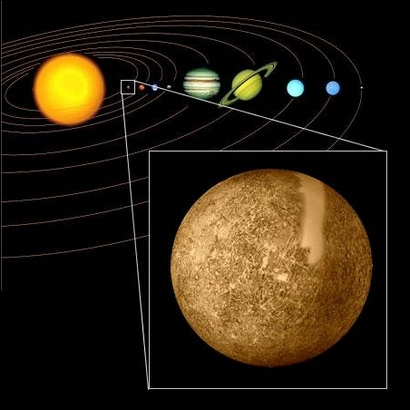

Меркур — најмалата и најблиската планета до Сонцето од осумте планети во Сончевиот систем, со орбитален период од околу 88 Земјени денови. Гледана од Земјата, наликува како да се движи во својата орбита за околу 116 денови, што е многу побрзо од другите планети во Сончевиот систем. Нема познати природни сателити. Планетата е именувана според римското божество Меркур, гласникот на боговите.
Меркур е гравитационо сврзан и се врти на начин кој е единствен во Сончевиот систем. Гледан релативно во однос на неподвижните ѕвезди, и се врти околу својата оска точно три пати за секој два орбитални периоди околу Сонцето. Гледано од Сонцето, во појдовниот систем кој се врти со орбиталното движење, изгледа како да се врти еднаш на секои две Меркурови години. Па така набљудувач на Меркур тогаш би видел само еден ден на секои две години.

Бидејќи скоро и да нема присуство на атмосфера која би ја задржувала топлината, Меркуровата површина ги има најголемите температурни промени во Сончевиот систем, промена кпја се движи од 100 K (−173 °C; −280 °F) во ноќта па се до 700 K (427 °C; 800 °F) за време на денот во некои екваторијални области. Половите се постојано на температура под 180 K (−93 °C; −136 °F). Меркуровата оска го има најмалиот наклон од сите планети во Сончевиот систем (околу 1⁄30 од степенот), но пак затоа го има најголемиот орбитален екцентрицитет. Во афел, Меркур е на растојание 1,5 пати поголемо од растојанието кога е во перихел. Меркуровата површина е ишарана со кратери и е слична со онаа на Месечината, што укажува дека истата не била геолошки активна со милијарди години.
Наклонетоста на оската на ротација на Меркур во однос на рамнината на која орбитира околу Сонцето е само 2°. Постои чуден однос помеѓу времето на ротација на Меркур околу својата оска и времето на револуција околу Сонцето. Потребни му се 59 земјини денови еднаш да се заврти околу својата оска, што е точно 2/3 од 88 дена, колку што изнесува една негова година. Заради чудниот однос на Меркуривиот ден и година, кога астронаут би стоел на Меркур, за него времето помеѓу две изгрејсонца би било 176 земјини денови. Ако се земе предвид и елипсоидната патека едно деноноќие би изгледало вака: Сонцето изгрева на исток и додека се движи кон зенитот станува cè поголемо. Тука ќе застане и ќе почне да се движи наназад, кон исток, за потоа пак да застане и да продолжи да се движи кон запад. Притоа сè до заоѓањето тоа станува сè помало и помало. Просечната големина на сончевиот диск е 2,5 пати поголема од сончевиот диск гледан од Земјата.
Меркур досега е посетен од две летала. Првото е Маринер 10, кое во текот на 1974 и 1975 три пати пролета покрај планетата. Успеа да сними 45% од површината, процент кој до денес не е зголемен заради блискоста на Меркур до Сонцето, што го отежнува неговото фотографирање. Месенџер (MESSENEGER) леталото е вотор, и тоа за време на пролетувањето во 14 јануари 2008 сними 30% од површината, а уште еднаш ќе помине покрај Меркур во 2009 година, по што ќе следи влегување во орбита во 2011, кога и се планира да сними карта на целата површина од оваа планета.
Дознај повеќе за Меркур
| Апхел |
69.816.900 км 0,466 697 АЕ |
| Перихел |
46.001.200 км 0,307 499 AE |
| Голема полуоска |
57.909.100 км 0,387 098 AE |
| Орбитален период |
87,969 1 д (0,240 846 a) |
| Ѕвезден период |
115,88 d |
| Просечна орбитална брзина |
47,87 км/с |
| Познати сателити |
нема |